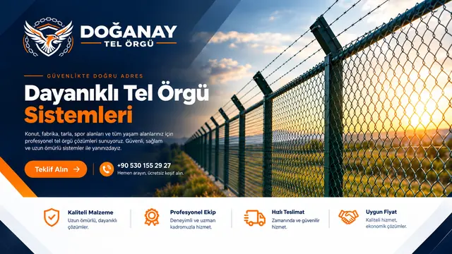
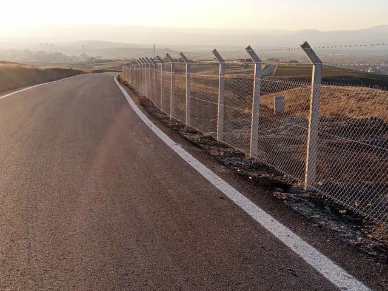
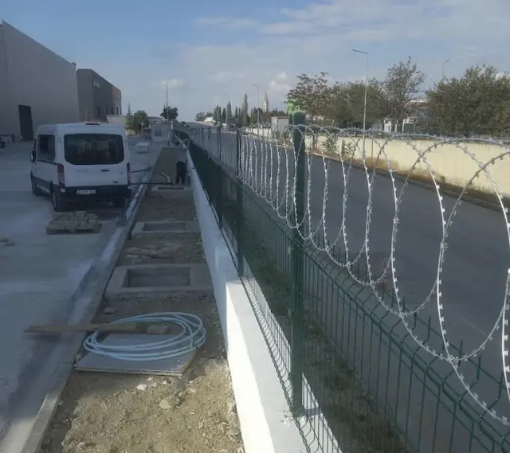
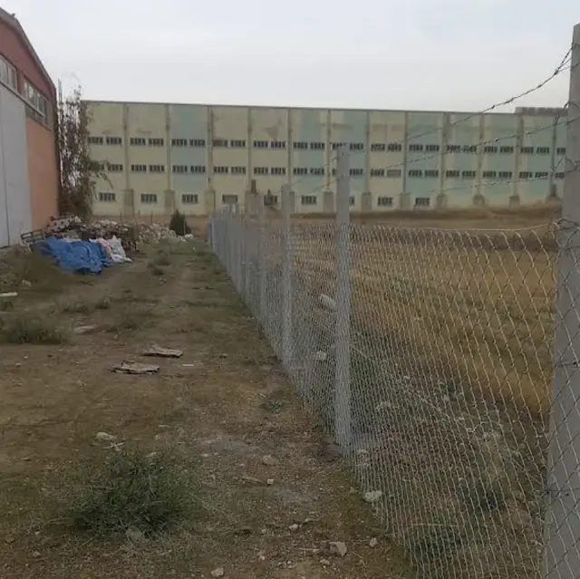
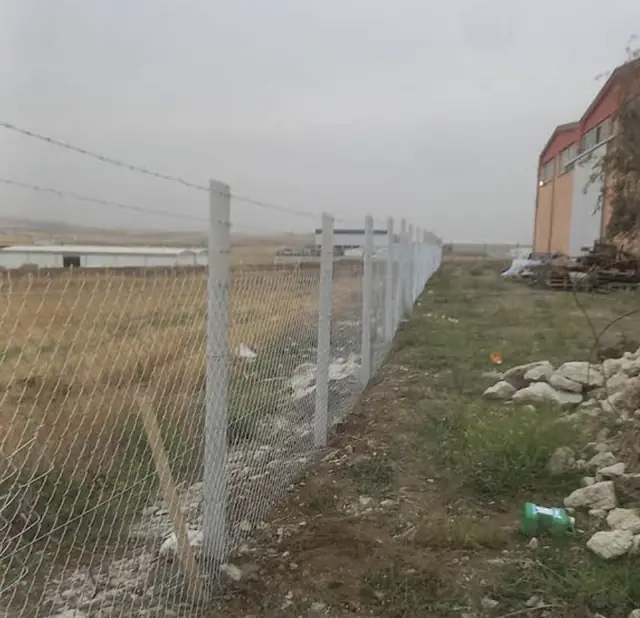
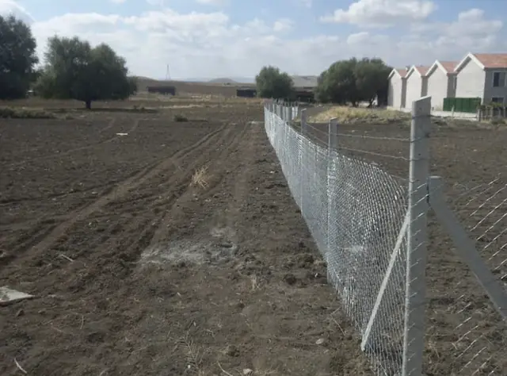
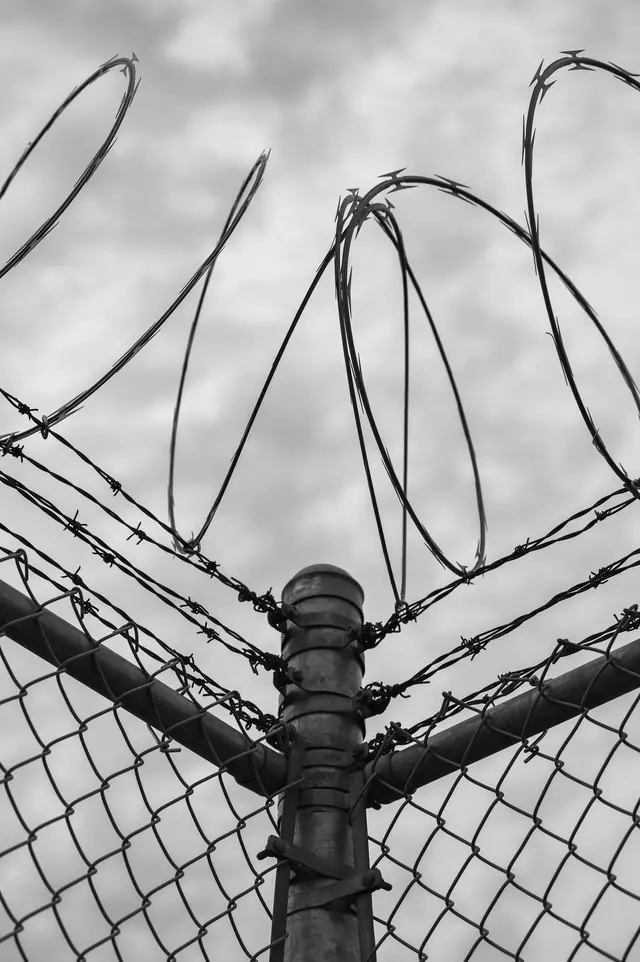
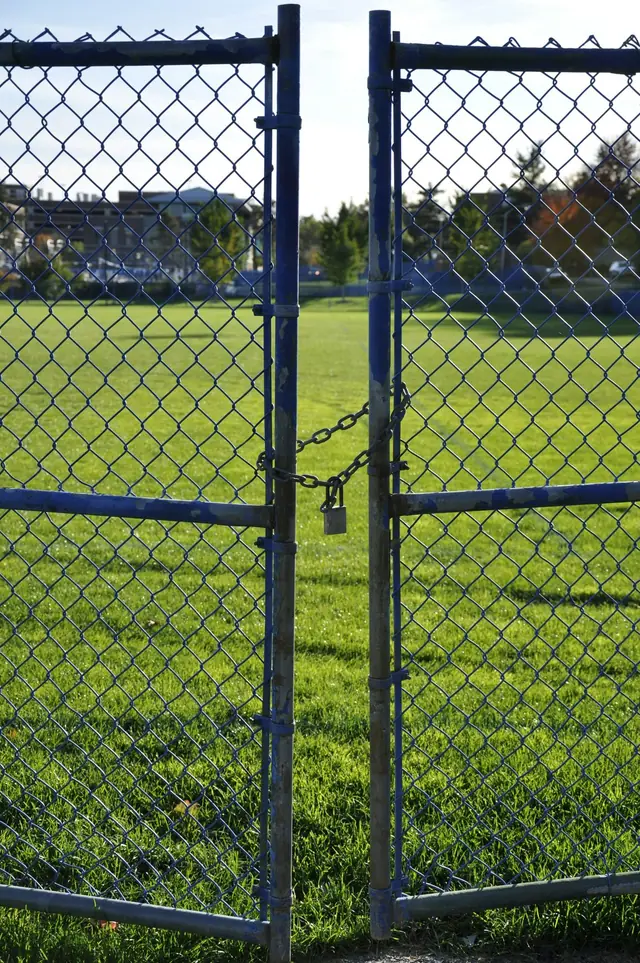
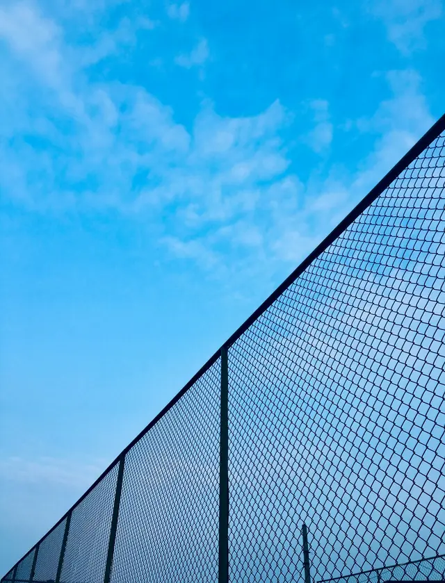

Doğanay Tel Örgü
Gölbaşı'nda, Ankara'nın tel örgü ve çit işlerini yapan bir ekibiz. Konut bahçesinden fabrika çevresine, tarladan spor sahasına kadar alanları çeviriyoruz.

Ne yapıyoruz?
Tel örgü, panel çit, jiletli tel, dikenli tel ve çit kapısı. Kısacası bir alanın sınırını çizmek ve korumak için gereken işlerin hepsi. Alanı yerinde görüp ölçüyor, ihtiyaca uygun çiti birlikte seçiyor ve montajını yapıyoruz.
Nasıl çalışıyoruz?
Bir çitin ömrünü telden çok direk ve montaj belirler. Hattı ip ile çekiyor, köşe ve uç direklerini payandalıyor, betonun oturmasını bekleyip teli gerdirerek bağlıyoruz. Fiyatı da malzeme ve işçilik ayrı ayrı görünecek şekilde konuşuyoruz.
- Yerinde keşif ve ölçü
- Malzemeli ya da yalnız işçilik
- Konut, sanayi, tarım ve spor alanları
- Gölbaşı merkezli, Ankara genelinde
Uygulamalarımızdan

Uygulamamızdan: Yol kenarı boyunca beton direkli galvaniz tel örgü, direk başlarında dikenli tel kolları 
Uygulamamızdan: Fabrika önünde beton duvar üstüne yeşil panel çit ve spiral jiletli tel 
Uygulamamızdan: Sanayi parseli sınırında beton direkli galvaniz tel örgü, üstte dikenli tel 
Uygulamamızdan: Boş arazi kenarında beton direkler arasında gerdirilmiş tel örgü ve dikenli tel 
Uygulamamızdan: Sürülmüş tarla kenarında beton direkli tel örgü çit hattı


Hizmetlerimiz
- Ankara Tel Örgü Çit MontajıBahçe, arsa ve site çevresi için galvaniz ya da PVC kaplı örgü tel; direği dikilmiş, gerdirilmiş halde.Detaylar →
- Ankara Panel ÇitKaynaklı, boyalı hazır panellerle düzgün ve sağlam çit; site, fabrika, okul ve müstakil ev çevresi için.Detaylar →

Ankara Jiletli TelDuvar, çit ve panel üstüne spiral jiletli tel; depo, şantiye ve fabrika çevresinde caydırıcı güvenlik.Detaylar →- Ankara Dikenli TelTarla, mera ve arsa sınırı için gergin dikenli tel; tel örgü üstüne ek sıra olarak da çekilir.Detaylar →

Ankara Tel Örgü ve Panel Çit KapısıÇitinize uygun yaya ve araç kapısı; tek ya da çift kanatlı, kilit yerli.Detaylar →- Ankara Arsa, Tarla ve Bahçe ÇevirmeArsa, tarla, bağ-bahçe ve şantiye çevresini tel örgü, dikenli tel ya da panelle çeviriyoruz.Detaylar →

Ankara Spor Sahası ve Halı Saha TeliHalı saha, okul bahçesi ve spor alanı çevresine yüksek tel örgü; top dışarı çıkmasın.Detaylar →
Metrajı söyleyin, keşfe gelelim
Alanın yeri, yaklaşık uzunluğu ve ne için çevirmek istediğinizi anlatın; gerisini birlikte planlayalım.